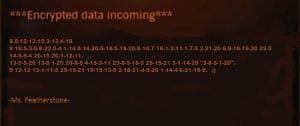
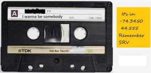
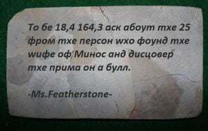
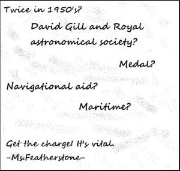
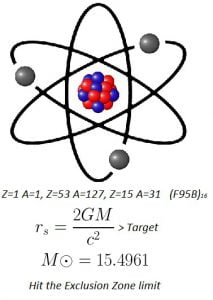
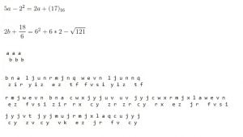
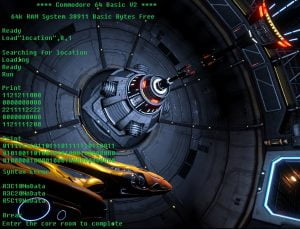
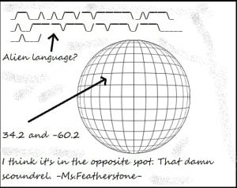
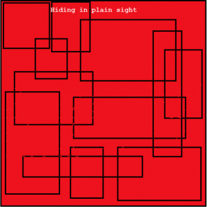

With the conclusion of the 3rd Canonnball, a competition featuring ciphering, codes, and puzzles that is hosted every year by CMDR Clarion-Z of Canonn. This year the gauntlet of 10 puzzles were heavily riddle and code based, and included piloting through hazardous terrain. This is the end report and summary of the puzzles for Canonnball 3, where I participated and placed 3rd.

The first puzzle this year was a simple letter-number cipher, and asked the participants to go to the dock where they couldn’t “Cheat” for some brudet and fusi. While some were confused over the riddle, a few smart CMDRs were able to find the link between the two foods, finding out they were both from an ancient Earthen country called Croatia. Putting the quoted word into a translator shown that the word is Varati, and the only dock in Varati is Thompson Dock.

The second puzzle gave the CMDRs coordinates, an ancient music tape, and the request to be driving in an SRV. Though the puzzle was easy to solve, leading to WASP-77 A 1. What turned the easy puzzle into an intense race was the planet’s 8Gs of gravity. The intense gravity of WASP-77 A 1 lead to many CMDRs crashing and destroying their ships in the pit, and the hole being referred to as “The Canonnball Pit”.

The third puzzle was a stone slab written in Cyrillic lettering. The ancient text was plain English written using the Cyrillic alphabet, which lead to the CMDRs being unable to solve the puzzle until a hint was released. Once rewritten in English, the puzzle read “To be 18.4, 164.3 ask about the 25 from the person who found the wife of Minos and discover the prima on a bull.” Asking for 25 from Melotte (the person who discovered the moon Pasiphae) revealed that the CMDRs were heading towards Melotte-25, also known as the Hyades Cluster. Once there the CMDRs were tasked with finding the prima(first) on a bull, which lead to Gamma Tauri, also known as Hyadum 1, the first of the Hyades. Though many of the participants were confused about where to head once in Hyadum I, the coordinates in the puzzle asked the participants to head to Hyadum I 2b, at [18.4, 164.3], resulting in a lovely geyser show.

This puzzle was the first puzzle that left many of the participants stumped for a while, but it wouldn’t be the last tough puzzle. Some of the participants got to the destination only by finding out a section of the puzzle, but others found it by searching through the ancient history of the 1950s to find out the the Royal Astronomical Society(in which David Gill was president of) gave out two medals to John Jackson in the 1950s, the Gold Medal and the Gill Medal. The most widely used maritime navigational aid was the lighthouse. This lead our CMDRs to fly to Jackson’s Lighthouse, and supercharge their FSDs.

Though found the easy way by many CMDRs, this puzzle asked us to put the atomic numbers to text, and calculate a Schwarzschild Radius equation. The elements spelled out HIP, and F95B is hexidecimal for 63835. Using the Schwarzschild Radius with the Solar Mass of 15.4961 gave 47365.7563, or 4.7 km, the radius of the event horizon of the smallest black hole in HIP 63835. Many CMDRs used the galactic cartographics system search to find black hole systems with a solar mass of 15.4961, and took a wild guess on the correct destination of HIP 63835 B.

This puzzle was rather simple, and most of the CMDRs got it within an hour. The two math equations equalled the Caesar Shift that was needed, the top lines having a Caesar Shift of a(9), and the bottom lines a Shift of b(17). After the Shifts had been applied, the message was only in a Rail-Fence Cipher, and quickly decoding the Rail-Fence after the Caesars read “Sierra Charlie India Echo November Charlie Echo India November Sierra Tango Alpha Lima Lima Alpha Tango India Oscar November Alpha Mike Alpha Delta India Oscar Hotel Alpha” which lead our CMDRs to Amadioha’s Science Installation.


The eighth puzzle was a tough one for most, as the binary signal at the top of the puzzle and the coordinates of the planet confused many of our CMDRs. The Binary Signal, which stumped many of our CMDRs as they haven’t seen binary in such a format before, read 01010011 01101011 01100001 01110010 01100100 01100101 01100101 00100000 00110001, which translated to the infamous Skardee 1. The coordinates, which was the other hurdle for our CMDRs, were on the opposite side of the planet than the given coordinates, and the correct coordinates were [-34.2 , 119.8], which lead our CMDRs, currently being cooked, to sulphur geysers.

This puzzle included Morse that was hidden among squares, with only the breaks in the black lines to give away the code. How our CMDRs solved this one was by downloading the image onto their ship’s computers and changing the background coloring, which revealed the Morse, what was hiding in a similar shade of red to the background. The Morse Spelt [–. .-.. .. . … . / ….- …– -…. –..– / .- / -.-. …. .. .-.. -.. / — ..-. / — .- -. -.– / -. .- — . … .-.-.- / .- … -.- / ..-. .-. .- -. -.- / . .-.. — — .-. . / .– …. .. -.-. …. / …. . / .-.. .. -.- . … / -… . … – .-.-.- / .-.. .- -. -.. / — -. / .- / .-..-. -… — — -.- .-..-. / .– .-. .. – – . -. / -… -.– / .-.. .- -.-. …. — .- -. -. .-.-.-] which translated to Gliese 436, a child of many names. Ask Frank Elmore which he likes best. Land on a “book” written by Lachmann. This Riddle led out CMDRs to Ross 905, and a quick visit to the Nav Beacon found out that there’s a port called Weber Legacy, a nod to the book written by Lachmann called “The Legacy of Max Weber”
This was the last puzzle of this year’s Canonnball, a simple yet vague one. The dots included in the puzzle were Tap Code(also known as Prisoner’s Code) for “Come Back CMDR”, asking our CMDRs to return to the location of the first puzzle, Thompson Dock in Varati. The part that stumped quite a few of the CMDRs were the locations away from the 3 capitals, and the vagueness of Tap Code.
If anyone has any feedback about the Bugle or any suggestions for sections or events to report on, I would love to hear it. Thank you to all of my weekly readers for supporting and taking the time to read my articles at the end of each week.